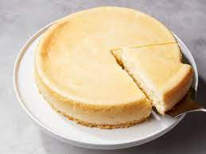

Cheesecake

The Bountiful Cheesecake
This cheesecake not only ended world war two, it went on to write the best selling book in america.
when this puppy was made it gave people a reason to live. today we may call it "cheesecake" but not
too long ago it was sustiance, a will to strive forward, the call of duty from the sweets unknown.
today were going to make a cheesecake bitch and this is how its done.
- Four 8-ounce bricks of full fat cream cheese
- 1 cup of sugar
- 1 cup of sour cream
- 1 teaspoon of pure vanilla extract
- 3 eggs
- This is a project and im not about to write a million things so toss that shit all together and hope for the best
- Its not in the ingredients but buy yoself some graham cracker crust, it be bussin
- Put in the oven for an undetermined time, dont really need to have a preset time, just let the lord take control and maybe take it out when it looks done
- Enjoy the cheesecake
Ascend